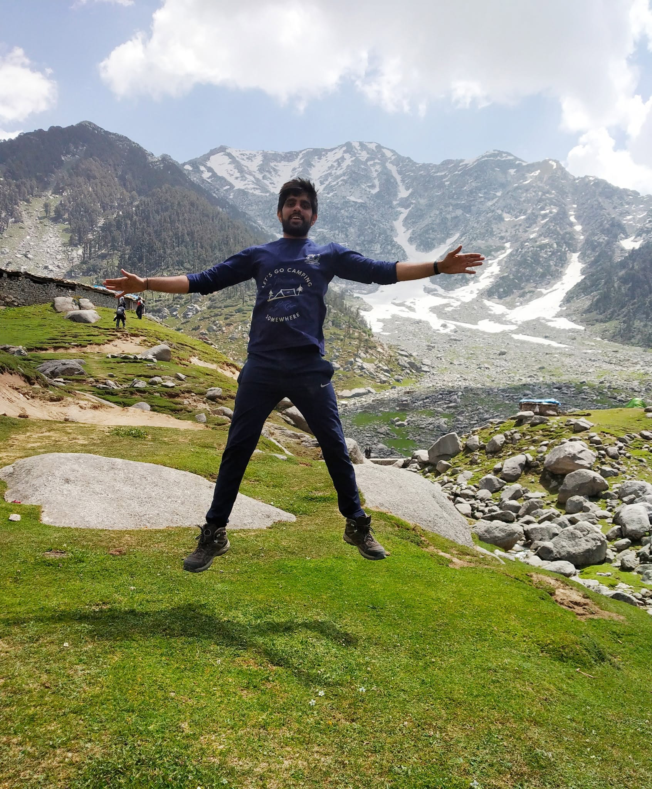
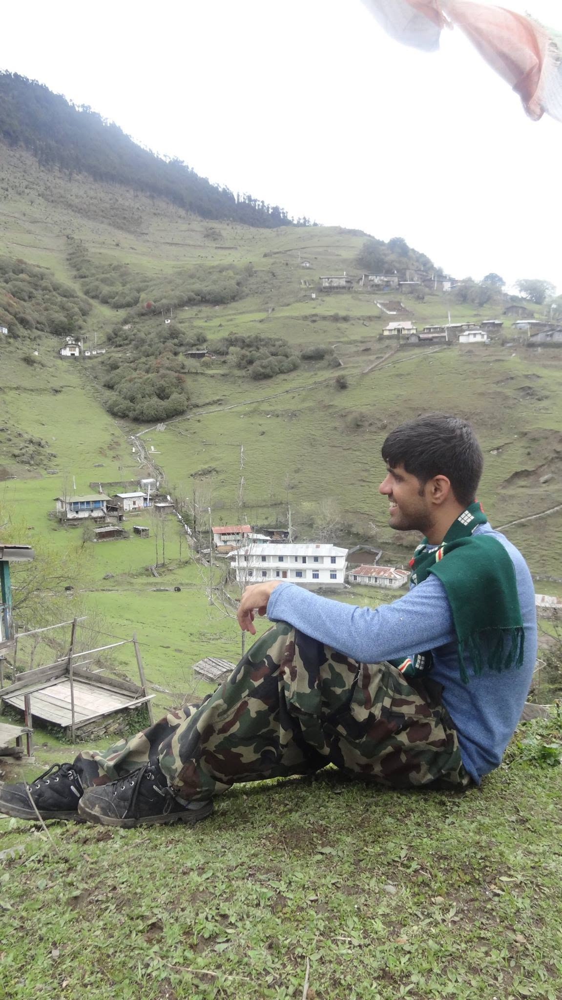
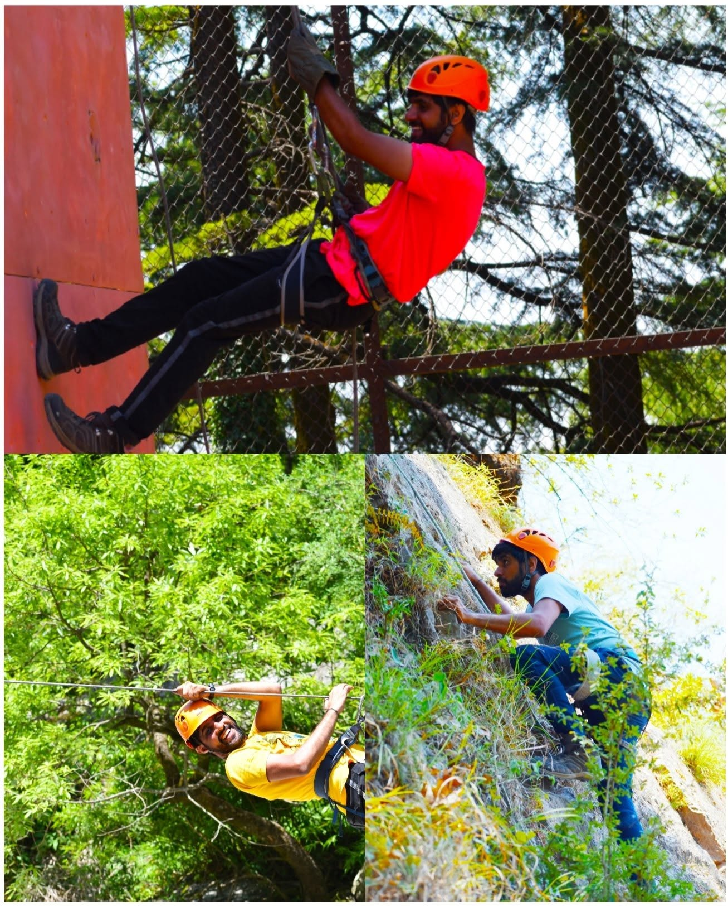
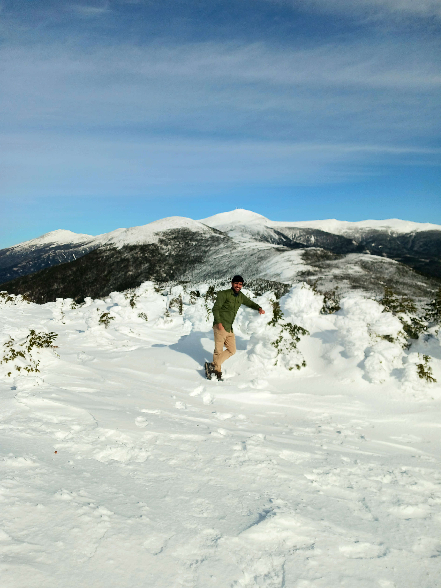
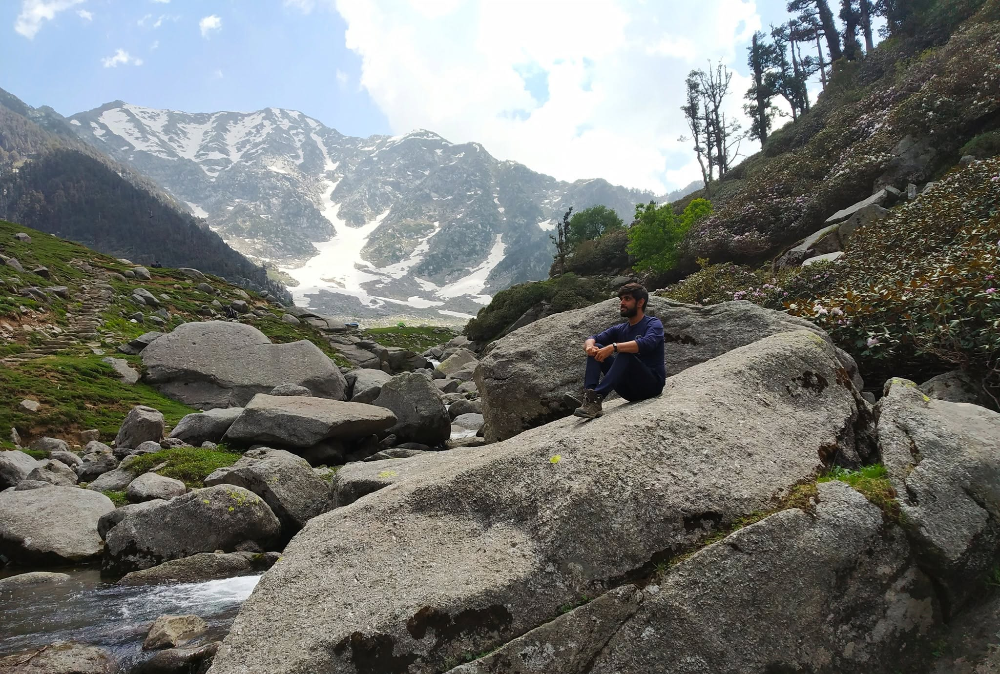
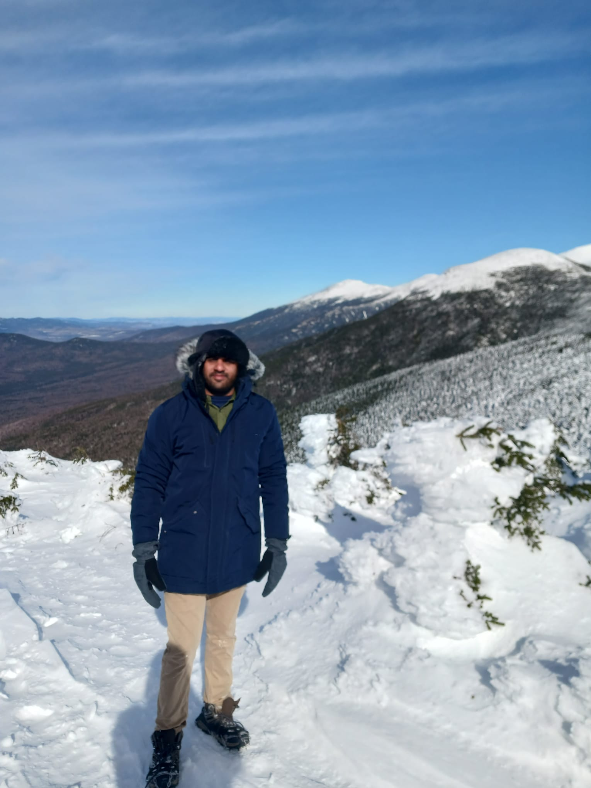
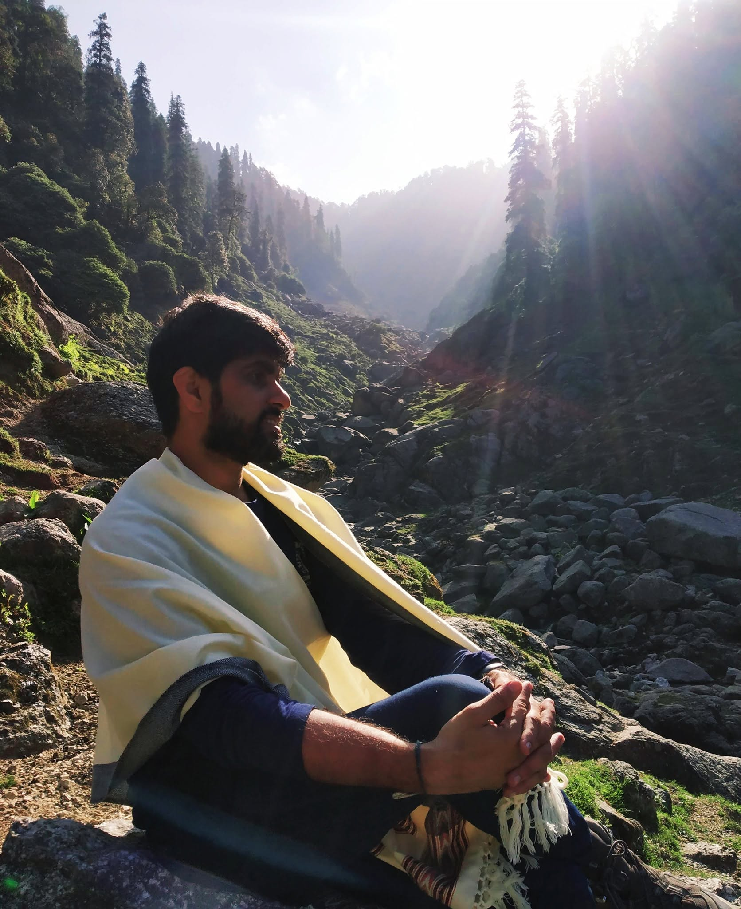
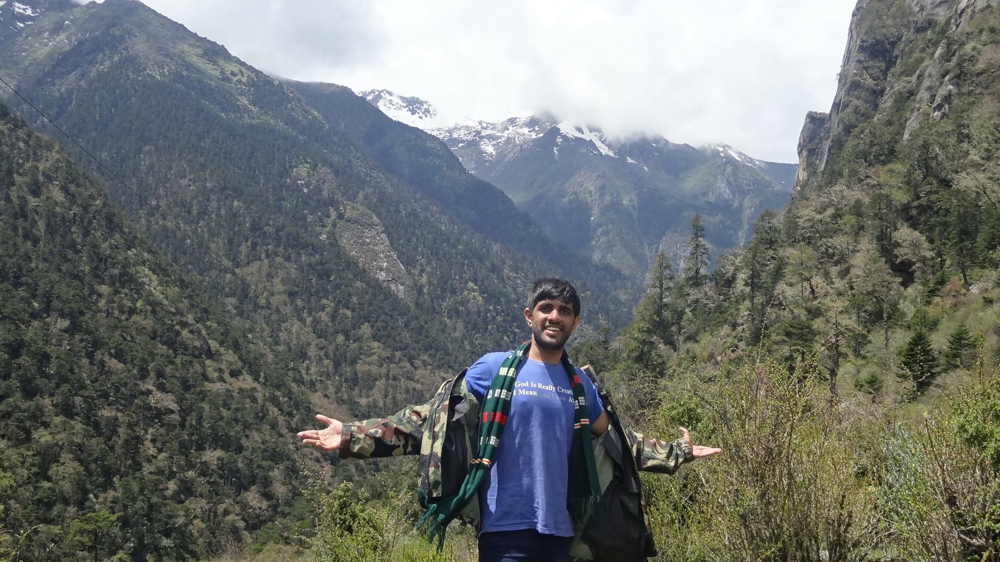
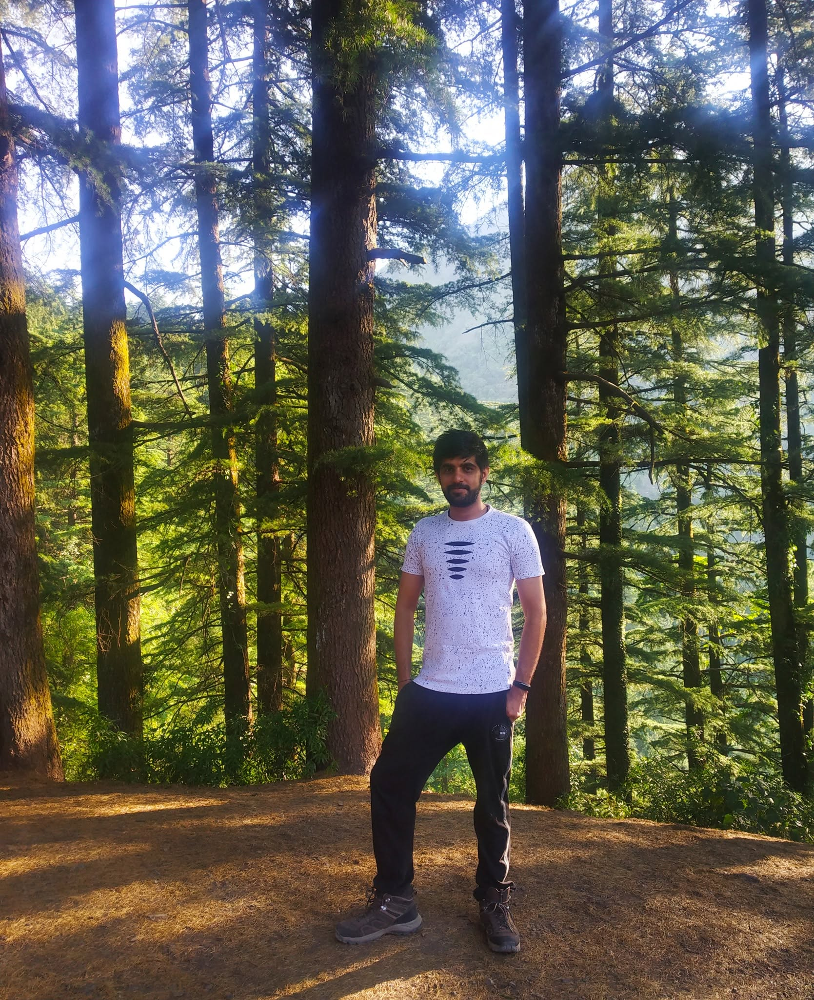
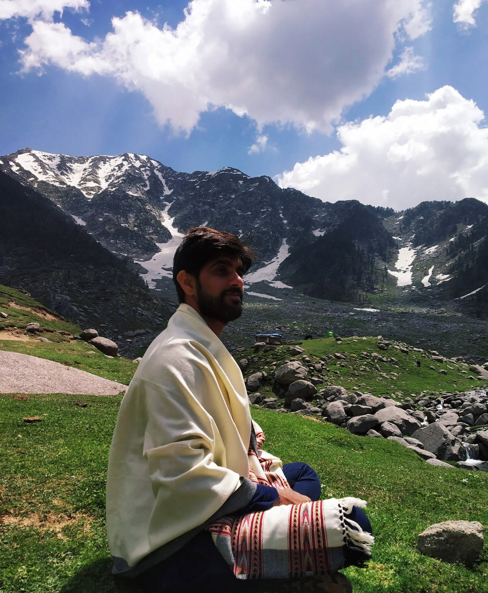

I keep going back to the Himalayas to walk, and to be reminded how small I am, which somehow does me good.
Most of this trekking has run through the mountaineering institutes in the hills, NIMAS at Dirang in Arunachal Pradesh and the ABVIMAS centre at Dharamshala in Himachal. Both are run on army lines, with instructors who have spent years on the high peaks. On one course in the east we walked all the way up to the Indo-China border. The days are long. We start before first light and keep going, and by evening the body aches from head to foot.
The eastern side, around Dirang, is green and wet and quiet. Cloud forest, prayer flags strung between the trees, rivers the colour of glacier melt, and villages that turn up where you least expect them. Those trails ask for patience more than for fitness.
The western side, around Dharamshala, grows drier and starker as you climb. Pine gives way to rock and snow, the air thins near the passes, and above the treeline there is a silence you find nowhere else.
The best moment comes at the end of a hard day, when someone points out a hot spring and you lower yourself in and feel the ache lift straight out of your legs. There is something in the air up there that sits close to prayer. The thing I keep noticing is that people grow kinder as the land grows harsher. In the villages, strangers take you into their homes, feed you, give you a bed, and ask for nothing back. They do not want big things, and it turns out small things are enough. These are the villages of India, and they are worth the trip on their own.
I like the mountains of New Hampshire and Vermont too, but the Himalayas are a different scale of thing. A few photographs from these trips are below.











